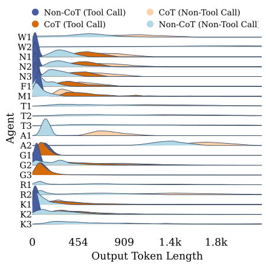
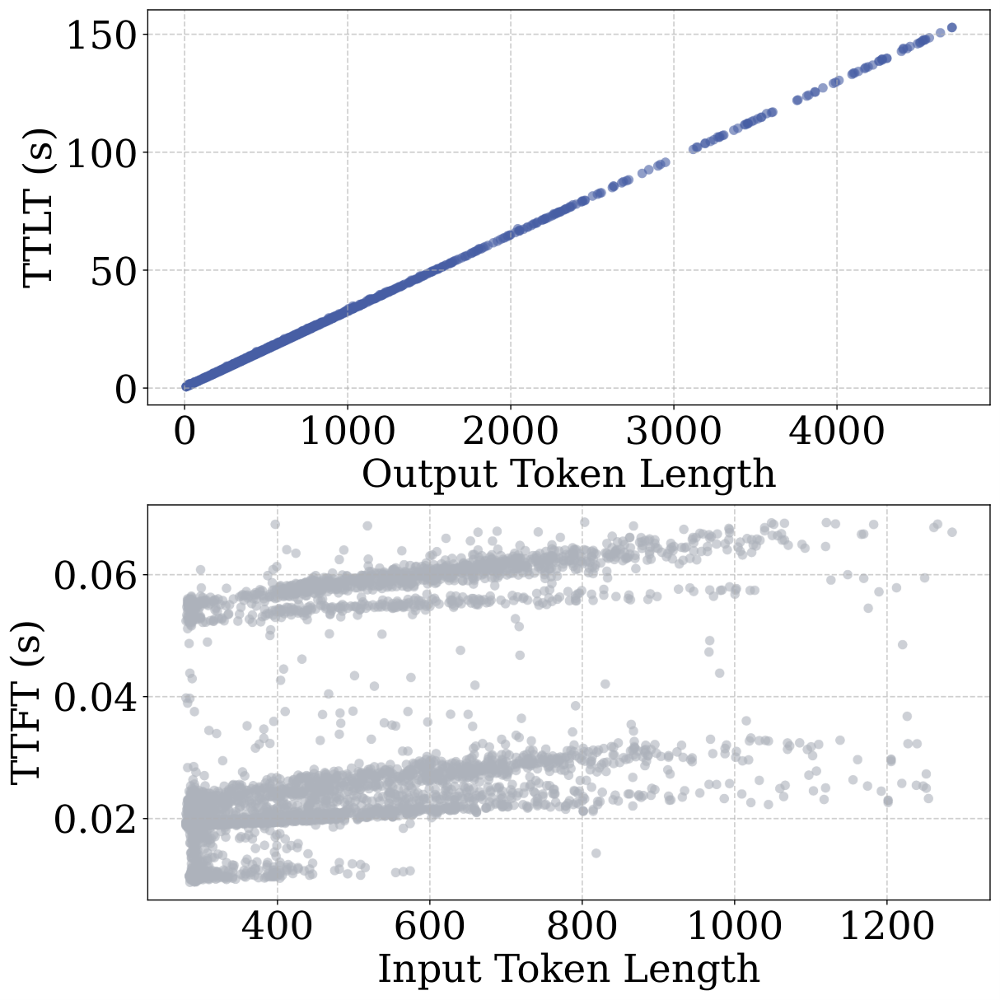
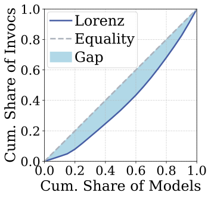
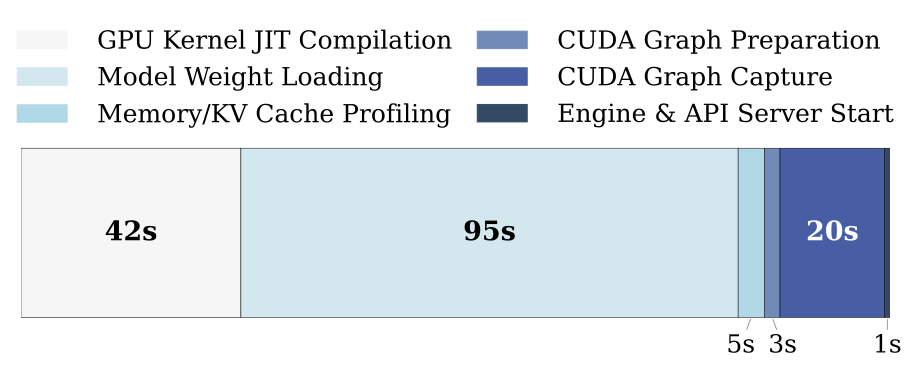
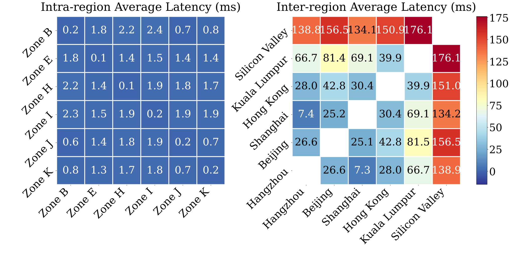
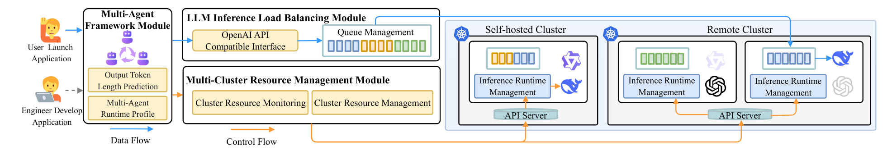
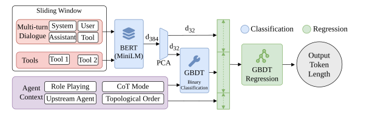
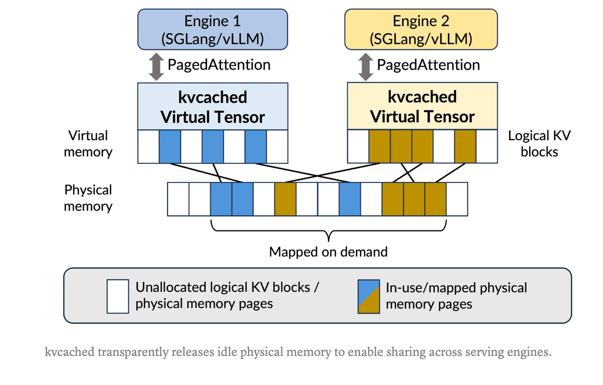

Introduction
LLM-MAS , LLM 기반 다중 에이전트 시스템이 복잡한 작업을 해결할 패러다임으로 주목받고 있다.
이는 사용자 요청을 구조화된 워크플로우로 구성하고, Planner, 실행, 검수 와 같은 전문 에이전트가 자연어 메시지를 주고 받으며 사용자 요청을 처리한다.
LLM-MAS 를 대규모로 실행하면 추론 인프라에 근본적인 문제가 생긴다.
- 자원이 제한된 환경에서는 GPU 용량이 제한적이고 파편화되어 있어 자원을 효율적으로 사용하지 못한다.
- 순차적인 워크플로우에서 앞의 작업으로 인해 대기하고 있는 에이전트들을 GPU 메모리에 유지하면 지연시간은 짧아지지만, 다른 요청을 처리할 수 없다.
- 반대로 용량 확보를 인해 해당 GPU 메모리를 회수하면 다시 에이전트를 생성하는데 드는 오버헤드로 SLO를 위반한다.
- 이는 정적인 자원할당으로는 LLM-MAS 환경에서의 자원 경합문제를 해결할 수 없다.
문제 인식
비결정적이고 입력에 따라 달라지는 실행 비용
LLM 마다 지연시간, 메모리사용이 달리지며 예측하기 어렵다. 긴 추론 단계가 워크플로우 앞에 존재한다면 다음 작업이 지연되는 Head of line bloking이 발생한다.

Fig. 1 — Agent 역할 및 추론 방식에 따른 출력 토큰 길이 분포
- X축: Output Token Length (출력 토큰 길이)
- Y축: Agent (W1, W2, N1, N2 등 각 Agent)
- 색상: CoT 활성화 여부와 도구 호출 여부에 따른 네 가지 실행 유형
이 그림은 Agent마다 출력 길이의 분포가 크게 다르다는 사실을 보여줍니다. 일반적으로 도구 호출 단계에서는 짧고 구조화된 결과를 생성하지만, CoT 추론이나 일반 텍스트 생성 단계에서는 출력이 길어질 수 있습니다.
모든 Agent에 동일한 예상 실행 비용을 적용하면 실제 실행 시간과 메모리 수요를 잘못 추정할 수 있다는 것을 보여줍니다.

Fig. 2:Relationships between output token length and TTLT (latency), and input token length and TTFT.
위쪽 그래프는 출력 토큰 길이별 TTLT 입니다. 출력길이가 길수록 전체 생성하는데 시간이 더 많이 소요됨을 볼 수 있습니다. (참고로 TTLT가 길어질수록 사용되는 KV 메모리도 증가합니다)
아래쪽은 입력토큰 즉,프롬프트 길이별 LLM이 처음 응답하는데 걸린 시간 TTFT 를 보여줍니다.
입력 길이와 첫 토큰 지연 사이에 관계가 있지만 분산이 존재함을 볼 수 있습니다.
fig1 fig2결론
Agent의 역할, 추론 전략, 도구 호출 여부에 따라 출력 토큰 길이가 달라지며, 이는 디코딩 시간과 KV Cache 사용량에 영향을 미친다.
이러한 실행 비용의 불확실성은 정확한 작업 스케줄링을 어렵게 하고, 긴 작업이 짧은 작업을 지연시키는 Head-of-Line(HoL) Blocking을 심화할 수 있다.
따라서 출력 길이와 실행 비용을 사전에 예측하고, 이를 기반으로 HoL Blocking을 완화하면서 GPU 메모리 제약을 고려해 작업을 배정하는 기법이 필요하다.
롱테일 사용 패턴과 메모리 경합
다중 LLM 환경에서는 모델 호출이 소수의 인기 모델에 집중되는 반면, 대부분의 모델은 드물게 호출되는 롱테일(Long-tail) 분포를 보입니다.
이러한 환경에서 각 모델에 전용 GPU를 할당하면 자원 활용률이 낮아지고, 요청이 들어올 때마다 모델을 로드하면 Cold Start로 인한 지연이 발생합니다.
반면 여러 모델을 하나의 GPU에 공동 배치하면 자원 활용률을 높일 수 있지만, 모델 가중치와 KV Cache가 제한된 GPU 메모리를 공유하면서 메모리 경합이 발생합니다.
따라서 모델의 실행 준비 상태와 GPU 메모리를 효율적으로 관리하는 것이 중요한 과제입니다.

왼쪽 그래프는 모델별 호출 빈도의 불균형을 로렌츠 곡선(Lorenz Curve)으로 나타낸 것입니다.
X축은 호출 빈도가 낮은 모델부터 정렬한 모델의 누적 비율이고, Y축은 해당 모델들이 차지하는 호출 횟수의 누적 비율입니다.
대각선은 모든 모델이 동일한 빈도로 호출되는 경우를 나타내며, 실제 곡선이 대각선에서 멀어질수록 모델 간 호출 빈도의 불균형이 크다는 의미입니다.
그래프를 통해 소수의 모델에 호출이 집중되고 대부분의 모델은 드물게 사용된다는 것을 확인할 수 있습니다.
따라서 모든 모델에 전용 GPU를 할당하는 방식은 GPU 자원 활용 측면에서 비효율적일 수 있습니다.

이 그래프는 표준 LLM 서빙 환경에서 모델의 Cold Start에 소요되는 시간을 단계별로 분석한 결과입니다.
모델을 로드하는데 총2분 46초 의 상당한 지연이 발생함을 확인할 수 있습니다.
이러한 Cold Start 지연은 TTFT(Time to First Token)를 증가시키고, 결과적으로 TTLT(Time to Last Token)도 지연시킵니다.
모델을 필요할 때마다 로드하는 On-demand 방식은 GPU 메모리 활용 효율을 높일 수 있지만, 초기화 비용으로 인해 사용자의 응답 대기 시간이 크게 증가합니다.
이는 대화형 AI 서비스처럼 지연시간에 민감한 환경에서 SLO(Service Level Objective) 위반으로 이어질 수 있음을 보여줍니다.
클러스터 간 라우팅의 상충 관계

분산환경에서 GPU 클러스터는 물리적으로 멀리 떨어져 있을 수 있습니다. 이로인해 네트워크 지연이 발생합니다.
왼쪽은 같은 리전 내부에서의 네트워크 지연을 확인할 수 있습니다. 반면에, 오른쪽은 서로 다른지역 대륙간의 평균 네트워크 지연시간을 나타냅니다.
보시면 sillicon valley 미국과 중국, 말레이시아 간의 네트워크 지연이 큼을 확인할 수 있습니다.
하지만, 단순히 네트워크 지연에따라 스케줄링을 하는것은 위험할 수 있습니다.
이전 슬라이드에서 보았듯 모델이 로드되어 있지 않은 클러스터는 2분이 넘는 시간이 콜드 스타트에 필요합니다. 지역이 가깝다 해서 모델이 없는 곳으로 스케줄링을 하면 오히려 전체 응답시간이 더 길어집니다.
따라서, 단순히 가장 가까운 클러스터에 요청을 라우팅하는 것이 아닌,
네트워크 지연뿐 아니라 모델 준비 상태와 GPU 메모리 가용성을 함께 고려하여 전체 응답시간을 최소화하는 클러스터 라우팅 기법이 필요합니다.
시스템 설계
따라서, Maestro를 제안하는데 세계층에 걸쳐 의사결정을 조율한다.
| 계층 | 핵심 기술 | 목적 |
|---|---|---|
| Node Level | 계층적 모델 가중치 배치 (GPU → CPU → Disk), 예측기반의 탄력적 KV Cache 할당 | GPU 메모리 효율 개선 및 여러 모델 공동 배치 |
| Cluster Level | 네트워크 지연, 모델 준비 상태, KV 메모리 여유를 고려한 적합도 기반 배정 | 최적의 실행 클러스터 선택 |
| Global Level | Workflow-aware 선점형 SRTF | HoL Blocking 완화, SLO 달성률 개선 및 Starvation 방지 |

먼저 왼쪽의 Multi-Agent Framework Module에서 Agent의 역할과 입력 컨텍스트 등 실행 정보를 수집하고, Output Token Length Prediction을 통해 예상 출력 길이를 추정합니다.
이후 요청은 LLM Inference Load Balancing Module로 전달되며, Queue Management에서 워크플로의 남은 실행 시간과 우선순위를 고려해 작업을 관리합니다.
Multi-Cluster Resource Management Module에서는 클러스터별 자원 상태를 모니터링하고, 네트워크 지연과 모델 준비 상태, KV Cache 가용성을 고려하여 실행할 노드를 결정합니다.
선택된 클러스터의 Inference Runtime Management에서는 모델 가중치와 KV Cache 메모리를 관리하면서 실제 LLM 추론을 실행합니다.
마지막으로 실제 실행 결과를 Runtime Profile과 자원 모니터링에 반영하여 이후 비용 예측과 스케줄링 결정을 개선합니다.
Maestro는 예측값만으로 한 번 스케줄링하는 것이 아니라, 실제 실행 결과를 다시 반영하는 피드백 기반 스케줄링 구조를 사용합니다.
즉, Maestro는 Agent 실행 비용 예측, 전역 작업 관리, 클러스터 선택, 노드 수준 메모리 관리를 결합한 통합 스케줄링 시스템입니다.
비용 예측

2단계 예측 파이프라인
- BERT (MINILM) 오버헤드 없이 긴 프롬프트를 효율적으로처리하기 위해 Maestro는 경량 BERT 모델인 MiniLM을 사용해슬라이딩 윈도 방식으로 인코딩하고 평균 풀링으로 임베딩을 집계합니다.
- GBDT Classification 앞서 추출된 특징과 Cot여부, 역할등을 입력받아 Agent가 도구를 호출할 확률을 예측합니다.
- GBDT 회귀 모델은 앞서 예측한 도구 호출확률, 입력 임베딩을 활용해 출력 토큰 길이를 예측합니다.
시스템 지표로 변환
앞서 설명한 예측 파이프라인에서 얻은 예상 출력 토큰 길이를 기반으로, 스케줄링에 필요한 예상 실행 시간과 KV Cache 메모리 요구량을 계산합니다.
먼저 실행 시간은 모델별 Microbenchmark를 통해 사전에 측정한 입력 처리 시간(Prefill)에, 토큰당 평균 디코딩 시간과 예상 출력 토큰 수를 곱한 값을 더해 계산합니다.
다음으로 KV Cache 요구량은 입력 토큰 수와 예상 출력 토큰 수의 합에 모델별 토큰당 KV 메모리 사용량을 곱해 계산합니다.
이렇게 추정한 실행 시간은 워크플로의 남은 실행 시간을 계산하고 작업 우선순위를 결정하는 데 활용됩니다.
KV Cache 요구량은 GPU 메모리 제약을 고려하여 실행 가능한 노드를 선택하고, 필요한 메모리를 예약하는 데 활용됩니다.
즉, Maestro는 예측된 출력 길이를 실제 스케줄링에 필요한 시간과 메모리 비용으로 변환하여 효율적인 작업 배정을 수행합니다.
노드 수준 실행 및 메모리 관리
마에스트로는 노드 수준의 런타임 관리자를 사용해 단일 GPU에 다중 모델을 공동 배치합니다
런타임 관리자는 노드의 준비상태와 KV 캐시 수용가능성을 스케줄러에 전송합니다. 스케줄러는 스케줄링에 이를 활용합니다.
모델 준비 상태 추상화와 메모리 산정
노드에서 모델을 활성화 하는데 드는 비용을 나타내기 위해 모델 상태를 추상화해 사용합니다. 총 5가지인데 다음과 같습니다.
- Running - 가중치와 실행 컨텍스트가 GPU에 상주
- Sleeping - 가중치는 호스트 메모리로 오프로드되지만, 재로딩 속도를 높이기 위해 경량 GPU 런타임 컨텍스트는 유지
- CPU-resident - GPU 컨텍스트는 보존하지 않고 가중치를호스트 메모리에 캐시
- Disk-resident
- Remote
계층적 가중치 할당을 통한 시간 다중화
먼저 계층적 모델 가중치 관리를 통해 모델 가중치를 GPU HBM, CPU RAM, Disk에 나누어 배치합니다.
더 비싼 자원에 자주 사용하는 warm model 을 유지합니다.
자주 사용하는 모델은 GPU에 유지하고, 메모리가 부족하면 LRU정책을 사용해 사용 빈도가 낮은 모델을 하위 계층으로 이동시켜 공간을 확보합니다
가상 메모리 KV 캐시를 활용한 공간 다중화 
Maestro는 kvcached와 CUDA VMM(Virtual Memory Management)을 활용하여 여러 LLM 모델이 GPU 메모리를 효율적으로 공유하도록 합니다.
각 LLM 서빙 엔진은 독립적인 가상 KV Cache 공간을 가지며, Demand Paging과 유사하게 실제 KV Cache가 필요한 시점에 물리 HBM 페이지를 동적으로 할당하고 매핑합니다.
사용하지 않는 물리 페이지는 회수하여 다른 모델이 활용할 수 있도록 합니다.
이를 통해 모델별 고정 메모리 예약으로 인한 낭비와 메모리 단편화를 줄이고, KV를 탄력적으로 프로비저닝할수 있습니다. 그 결과 제한된 GPU 메모리에서 여러 LLM 모델의 공동 배치 가능하게 합니다
메모리 교체 정책
GPU 에 KV 메모리 할당에 실패하면, 런타임 관리자는 다음과같은 우선순위로 메모리 공간을 확보합니다.
(Idle → Sleeping →Active) 순으로 모델을 정리합니다.
(1) Idle - Running 모델을 Sleeping 상태로 전환한다.
(2) Sleeping 상태인 모델을 퇴출한다.
(3) 대기 중인 Sleeping 전환을 중단한다.
(4) Active모델의 KV를 스왑 아웃한다.
(5) Active실행을 중단한다.
또, 런타임 매니저는 모델을 교체하며 교체된 모델을 복구하는데 필요한 복구 지연 시간으로 중단 패널티를 계산합니다.
Workload-Aware Cross-Cluster Scheduling
앞서 각 노드의 Runtime Manager가 모델 준비 상태와 가용 GPU 메모리 등의 자원 정보를 스케줄러에 보고한다고 설명했습니다.
Maestro는 이 정보와 Maestro-Pred의 예측 결과를 활용하여 어느 노드에서, 어떤 작업을 먼저 실행할지 결정합니다.
실행 순서 결정에서는 전역 큐와 노드별 로컬 큐를 사용합니다.
전역 큐에서는 현재 단계와 이후 단계의 예상 실행 시간을 합산하여 워크플로의 잔여 실행 시간이 짧은 작업을 우선 처리합니다. 이를 통해 Head-of-Line Blocking을 완화합니다.
노드 선택에서는 예측된 KV Cache 요구량에 여유량을 추가해, 메모리 제약을 만족하는 노드만 후보로 선정합니다.
이후 네트워크 지연, 모델 준비 시간, 메모리 회수 비용 등을 고려한 적합도 점수를 계산해 가장 적합한 노드를 선택합니다.
마지막으로 자원 경합이 발생하면 후속 작업을 선점할 수 있지만, LLM 디코딩 중에는 중단하지 않고 단계 경계에서만 선점하여 실행 중인 추론에 미치는 영향을 최소화합니다.
### IV. Experimental Setup & Evaluation
- 실험 환경
| 항목 | 실험 설정 |
|---|---|
| 실험 방식 | 실제 GPU 클러스터 실험 + Trace-Driven Simulation |
| 하드웨어 | NVIDIA A100 GPU 64개, 서버 32대 |
| 추론 엔진 | vLLM |
| 워크로드 | 9개 Multi-Agent 애플리케이션 |
| 데이터 규모 | 46,769개 워크플로, 144,524개 LLM 호출 |
- 주요 평가 결과
| 평가 항목 | 비교 대상 | Maestro 성능 |
|---|---|---|
| 출력 길이 예측 정확도 | Magnus | MAE 19.2% 감소 |
| KV Cache 메모리 효율 | 비오버커밋 예약 방식 | KV 예약 HBM 67.2% 감소 |
| 스케줄링 성능 | EDF | SLO 달성률 23.6%p 향상 (높은 경합 상황) |